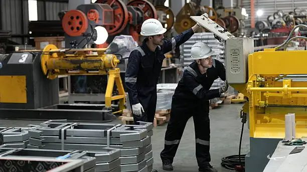

Şimşek sanayi üretiminde güçlenme bekliyor: Eylül artışı kalıcı toparlanmanın işareti mi?
Hazine ve Maliye Bakanı Mehmet Şimşek, eylül ayı sanayi üretim verilerinin ardından önümüzdeki dönemde üretim görünümünün güçlenmesini beklediklerini açıkladı. TÜİK verilerine göre sanayi üretimi eylülde aylık yüzde 2,1, yıllık yüzde 2,6 arttı. Ancak ağustosta yıllık üretimin gerilemiş olması, bu yükselişin kalıcı bir eğilime dönüşüp dönüşmeyeceği sorusunu gündeme getiriyor.
Kaynak: TÜİK – Sanayi Üretim Endeksi, Eylül 2026: https://veriportali.tuik.gov.tr/tr/press/58189, Hazine ve Maliye Bakanı Mehmet Şimşek'in açıklaması – TRT Haber, 10 Kasım 2026: https://www.trthaber.com/haber

Şimşek'in açıklamasında iki unsur öne çıktı: Küresel talebin ve finansal koşulların iyileşmesi beklentisi ile yüksek teknoloji üretimindeki artış. Veriler, sanayide bazı alanlarda güçlü hareketlilik bulunduğunu gösterirken, üretimin bütün sektörlerde aynı ölçüde güçlendiğini söylemek için henüz yeterli kanıt sunmuyor.
Eylül verisi ne söylüyor?
Türkiye İstatistik Kurumu'nun 10 Kasım 2026'da yayımladığı Sanayi Üretim Endeksi'ne göre üretim, eylülde bir önceki aya kıyasla yüzde 2,1 yükseldi. Geçen yılın aynı ayına göre artış ise yüzde 2,6 olarak gerçekleşti.
Alt sektörlerde yıllık değişimler farklılaştı. Madencilik ve taş ocakçılığında yüzde 1,2, imalat sanayisinde yüzde 2,6, elektrik, gaz, buhar ve iklimlendirme üretiminde yüzde 4 artış kaydedildi.
Aylık karşılaştırmada ise imalat sanayisi yüzde 2,3 yükselirken madencilik yüzde 1,1 arttı. Elektrik, gaz ve buhar üretimindeki aylık artış yüzde 0,1 ile sınırlı kaldı.
Bu dağılım önemli. Çünkü toplam sanayi üretimindeki artış, bütün alt sektörlerin aynı hızla büyüdüğü anlamına gelmiyor. Özellikle imalat sanayisindeki hareketlilik, üretim görünümünün değerlendirilmesinde belirleyici konumda.
Bir aylık yükseliş, kalıcı toparlanma mı?
Eylül verisini değerlendirirken önceki ayların seyrini göz ardı etmemek gerekiyor.
TÜİK'in açıkladığı yıllık değişim serisinde sanayi üretimi 2026'nın ocak ayında yüzde 1,9 gerilemiş, martta yüzde 1,2 düşmüş, nisanda yüzde 6,1 yükselmişti. Mayıs ve haziran aylarında yeniden negatif değişimler görülürken temmuzda da düşüş kaydedildi. Ağustos ayında yıllık gerileme yüzde 1,9'a ulaştı. Eylülde ise yüzde 2,6 artış gerçekleşti.
Bu tablo, sanayi üretiminin yıl boyunca düzenli bir yükseliş çizgisi izlemediğini gösteriyor. Eylül artışı olumlu bir veri olmakla birlikte, önümüzdeki aylarda benzer performansın devam edip etmeyeceği henüz belli değil.
Dolayısıyla Şimşek'in üretimin güçleneceğine ilişkin değerlendirmesi gerçekleşmiş bir sonuç değil, geleceğe yönelik ekonomik beklenti olarak okunmalı.
Yüksek teknoloji üretiminde dikkat çeken ayrıntı
Açıklamanın en dikkat çekici başlıklarından biri yüksek teknoloji üretimi oldu.
Şimşek, ocak-eylül döneminde yüksek teknoloji üretiminin geçen yılın aynı dönemine göre yüzde 7,6 arttığını belirtti. TÜİK verilerinin teknoloji sınıflandırmasına ilişkin eylül karşılaştırmasında ise yüksek teknoloji endeksinin yıllık artışı yüzde 31,1 olarak aktarıldı.
Burada iki ayrı ölçüm bulunuyor. Yüzde 7,6, dokuz aylık dönemin toplam performansına ilişkin karşılaştırmayı; yüzde 31,1 ise eylül ayının geçen yılın aynı ayına göre değişimini ifade ediyor. Bu nedenle iki oran birbirinin yerine kullanılamaz.
Yüksek teknoloji üretimindeki artış, Türkiye'nin üretim yapısının niteliği açısından önemli bir gösterge. Ancak bu veriden hareketle ekonominin tamamında teknolojik dönüşümün tamamlandığı sonucuna ulaşmak mümkün değil. Yüksek teknoloji ürünlerinin toplam sanayi üretimindeki ağırlığı, yerli katma değer oranı, ithal girdi bağımlılığı ve ihracat performansı da incelenmeli.
Asıl mesele yalnızca daha fazla yüksek teknoloji ürünü üretmek değil; bu üretimin ne kadarının yerli bilgi, mühendislik, ara malı ve tedarikçi kapasitesiyle gerçekleştirildiği.
Üretim artışı şirketlerin kazancının arttığı anlamına gelmiyor
Sanayi üretim endeksinin doğru okunması gereken bir başka yönü de ölçtüğü ekonomik faaliyettir.
TÜİK'in sanayi üretim endeksi, sanayi kuruluşlarının fiziksel çıktı miktarındaki değişimi izleyen bir hacim endeksidir. Bu nedenle üretim artışı doğrudan şirketlerin kârlarının, satış gelirlerinin veya çalışanların ücretlerinin aynı oranda yükseldiğini göstermez.
Üretim miktarı artarken enerji, hammadde, finansman ve işçilik maliyetleri de yükselebilir. İşletmeler daha fazla üretim yapmasına rağmen kârlılıkta aynı ölçüde artış sağlayamayabilir.
Bu nedenle sanayi üretim verisinin yanında üretici fiyatları, kapasite kullanım oranı, siparişler, ihracat ve istihdam göstergelerinin de izlenmesi gerekiyor.
TÜİK'in eylül ayı Yurt İçi Üretici Fiyat Endeksi verisinde yıllık artış yüzde 27,38 olarak açıklanmıştı. Bu veri, üretim hacmiyle üretim maliyetleri arasındaki farkın neden önemli olduğunu ortaya koyuyor. Ancak üretici fiyatlarındaki artışın tamamını doğrudan maliyet artışı olarak yorumlamak da doğru olmaz; endeks yurt içinde satılan yerli üretim ürünlerinin fiyat değişimini ölçüyor.
Kapasite kullanımı ve reel sektör güveni ne söylüyor?
Sanayinin gelecekteki görünümünü değerlendirirken yalnızca gerçekleşmiş üretime değil, işletmelerin mevcut kapasitesini ne ölçüde kullandığına ve geleceğe ilişkin beklentilerine de bakmak gerekiyor.
TCMB'nin ekim ayı verilerine göre mevsim etkilerinden arındırılmış imalat sanayi kapasite kullanım oranı yüzde 74,3 oldu. Bir önceki aya göre 0,2 puanlık artış kaydedildi.
Buna karşılık reel kesim güven endeksi ekimde mevsimsellikten arındırılmış olarak 1,4 puan gerileyerek 101,1 seviyesine indi. Endeksin 100'ün üzerinde bulunması iyimserlik ile kötümserlik arasındaki eşik bakımından önem taşısa da aylık düşüş, beklentilerdeki değişimin ayrıca takip edilmesini gerektiriyor.
Bu göstergeler birlikte ele alındığında, üretim kapasitesinin kullanımı ve işletmelerin beklentileri açısından tek yönlü bir tablo bulunmuyor. Üretimdeki yükselişin siparişlere, yatırımlara ve istihdama yansıyıp yansımadığı önümüzdeki dönemin önemli göstergeleri olacak.
Türkiye sanayisinin önündeki temel sınav
Şimşek'in açıklamasında küresel talebin ve finansal koşulların iyileşmesi beklentisi özellikle vurgulandı. Bu iki unsurun sanayi üretimi üzerindeki etkisi önemli.
Türkiye'nin ticaret ortaklarındaki ekonomik yavaşlama, ihracat siparişlerini ve fabrikaların üretim planlarını etkileyebilir. Küresel talepteki toparlanma ise ihracat yapan sanayi kuruluşları için yeni sipariş fırsatları yaratabilir.
Finansman koşullarının iyileşmesi de işletmelerin makine, teknoloji ve üretim kapasitesi yatırımlarını kolaylaştırabilir. Ancak finansmana erişimin tek başına üretim artışını garanti etmediği unutulmamalı. İşletmelerin yatırım kararları, beklenen talep, maliyetler, kur koşulları ve geleceğe ilişkin belirsizliklerle birlikte şekilleniyor.
Önümüzdeki dönemde üç gösterge özellikle önem taşıyacak:
Sanayi üretimindeki artışın arka arkaya gelen aylarda devam edip etmediği.
Yüksek teknoloji üretimindeki yükselişin ihracata ve yerli katma değere dönüşüp dönüşmediği.
Kapasite kullanımındaki hareketliliğin yeni yatırım ve istihdamla desteklenip desteklenmediği.
TÜİK'in bir sonraki sanayi üretim bültenini 10 Aralık 2026'da yayımlaması bekleniyor. Bu veri, eylüldeki yükselişin devam edip etmediğini değerlendirmek açısından önemli olacak.
Şimşek'in üretimin güçleneceğine yönelik beklentisi, eylül verileriyle desteklenen bir iyimserlik taşıyor. Ancak sanayide kalıcı bir toparlanmadan söz edebilmek için yalnızca bir aylık artış yeterli değil. Üretimin farklı sektörlere yayılması, teknolojik üretimin yerli katma değere dönüşmesi ve işletmelerin siparişlerinin sürdürülebilir biçimde artması gerekiyor.
Veri notu: Üretim endeksi fiziksel çıktıdaki değişimi ölçer; ciro, kârlılık veya çalışan gelirleriyle aynı gösterge değildir. Aylık ve yıllık oranlar farklı karşılaştırma dönemlerine dayandığından birbirine karıştırılmamalıdır.